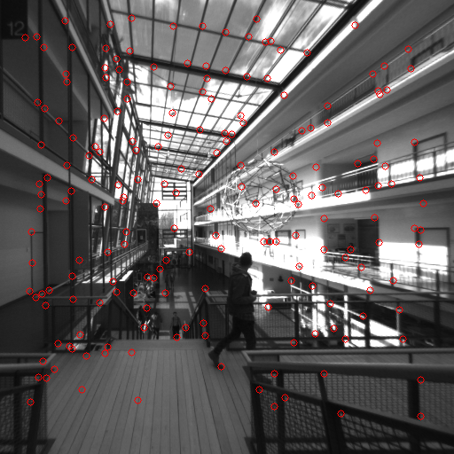

Extras
Miscellaneous scripts used to test the entire MVS pipeline:
1. R_to_euler.py script was used to test out the
scipy.spatial.transform.Rotation function for dealing with transforms and conversion
of rotation matrix to euler angles and quaternion.
2. test_depth_loader.py was used to check whether the keypoints stored from Basalt match the ones in the visualization in the GUI. It reads the stored keypoints from the text file and marks them with circles on the image. This basically gives a check of the co-ordinates of the stored keypoints. E.g.

3. test_keypoints.py was used to check if the stored keypoints were compatible for tensor operations on the MonoRec side. There were some issues with the written keypoints like:
some entries had ‘nan’ co-ordinates and depth values
some x and y co-ordinates were out of range for the image resolution
The above problems were accounted for in the dataloader on the MonoRec side.